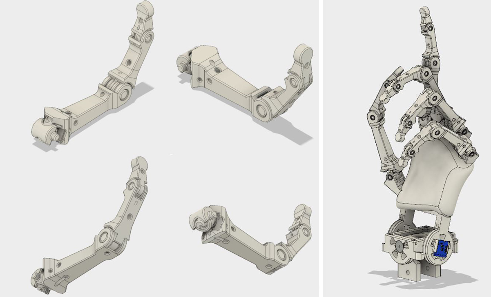
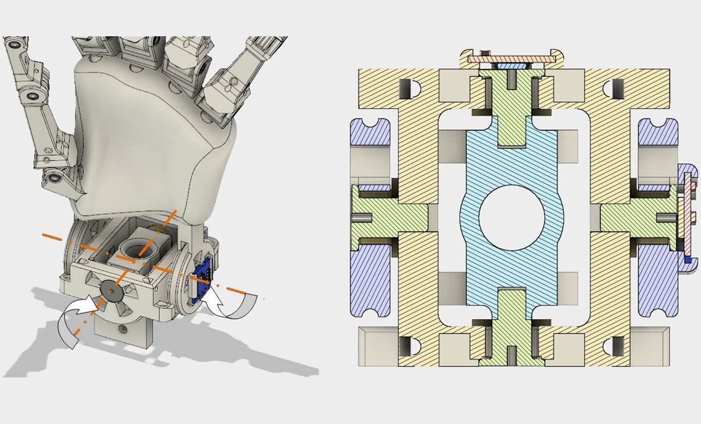
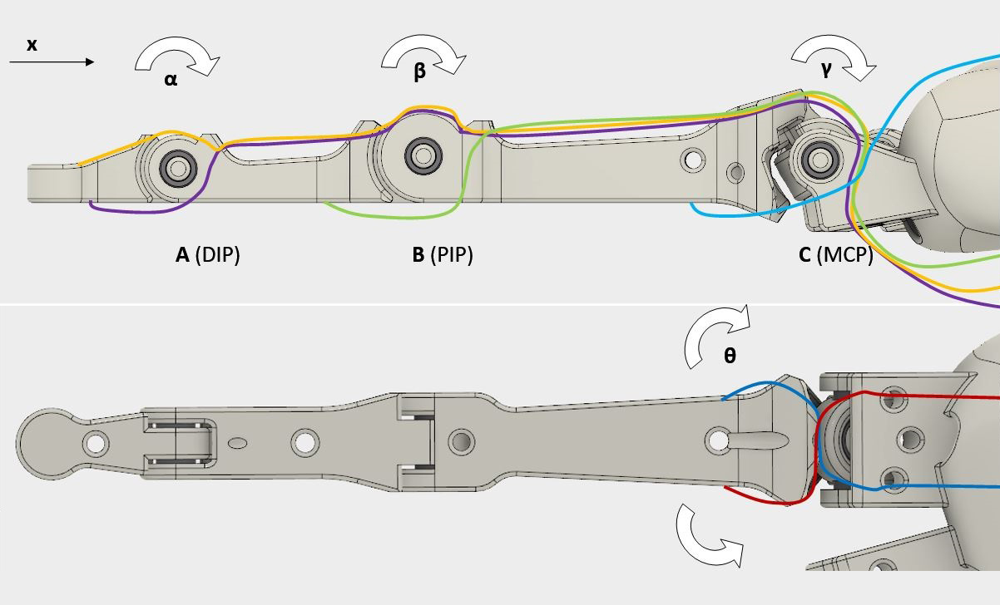
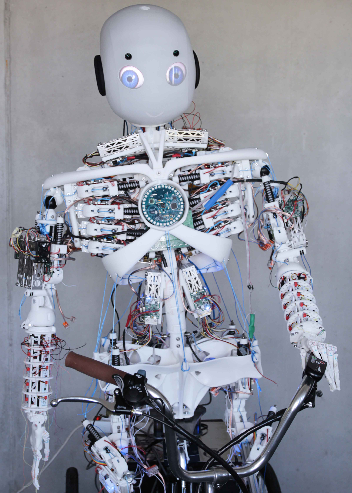

The goal of the Roboy project is to advance humanoid robotics to the state where its robots are just as good as a human body. The project‘s insights will not only make robots more capable and natural to interact with but also teach us how to build better prosthetics & exoskeletons. To achieve this goal, the team created a platform for robot development inspired by biology that unites students, researchers, companies and artists from a broad spectrum of disciplines. To ensure unrestricted development all results are keept open source. Our team's mission was to develop a tendon driven anthropomorphic robotic hand, which is able to closely mimic the human hand.
Robotics Engineer
1 Year
Autodesk Fusion 360
Photoshop CC
Illustrator CC
Premiere CC
After Effects CC
Arduino
Laser Cutting
3D Printing
We started our work by doing a reasearch on different concepts of tendon-driven robotic fingers based on anatomical models. Our study aimed to realize an anthropomorphic robotic hand that has the same characteristics and dexterity as a human hand, and it also aims to identify the advantages of the human musculoskeletal structure for application to the design and control of robot manipulators.
We decided on different concepts for developing prototypes by simplifying the human tendon routing system. We tested our concept on our first prototype. The final version was developed to give the robotic hand a more human-like look and to adapt it into Roboy 2.0.
The prototypes were developed for the Roboy project at the Technical University in Munich , with the goal of designing and building an anthrophomorphic hand that can be adapted on the humanoid robot Roboy 2.0. This project is aimed to develop prototype solutions for grasping and manipulation operations. The hand is composed by a palm and five independent fingers, each with 22 degrees of freedom (hereinafter, DoF), actuated by servomotors and tendons.
Each finger was designed with 4 DoFs, they are DIP flexion, PIP flexion, MCP flexion and MCP abduction. The wrist has 2 DoFs. Which makes in total 22 DoF driven by 20 servo motors.
The PIP joint has a range of 110°, the DIP joint 70°(flexion) and the MCP joint up to the 30° (extension) and 90° (flexion), 35° abduction or abduction. The RoM of the wrist is: 0° - 20° (radial deviation), 0° - 30°(ulnar deviation), 0° - 80° (flexion) and 0° - 70° (extension).
Two Igus plastic bearings are inserted from the side into the axis. They are press connected and the outside surface of the bearing is glued with the inside surface of the shaft holder.
The wrist has 2 DoFs. It is made out of two pair of pulley wheels, conneted to 4 tendons. It is equipped with plastic bearings, and two angle sensor on tiny electronic boards to determine precise controlling of the wrist. Get to know how to fix the tendons: here.
The band system in the hand works as the guiding tunnel as well as bearing of the most frictions and torque forces. Mimicking directly from human hand tendon sheaths can reduce lots of work.
The tendon routing system requires 6 tendons. They are tied around the finger parts, so that they have a fixed connection to the respective finger. Get to know how to fix the tendons: here.
The goal of the Roboy project is to advance humanoid robotics to the state where robots are as capable as human bodies. It should be just as fast, versatile, robust and flexible as the human body. Roboy´s tendon driven anthropomorphic hand closely mimics the human hand. The hand is perfect for signs: pointing, waving, fist-bump – or even mimicking Captain Spock.
After sucessfully testing our first prototype, we developed the final version of the robotic hand which has a more human-like look, a wrist, less servo motors and an improved tendon-routing system.
The first prototype was developed independently from Roboy to test the design of five tendon driven fingers with the servo system driven by 25 motors.
The second prototype was developed in order to adapt it into Roboy 2.0. It has 20 servo motors which will be integrated in Roboy´s new hand-arm system. The new design of Roboy´s hand is more humanlike with an additional wrist. The new tendon routing improved the precision in comparison to the prototype1. Furthermore, a sensor system on the wrist has been implemented.
"Prototyping is the conversion you have with your ideas", -Tom Wujec
The CAD files and code can be found at Roboy's Github profile: Link .
It was an awesome project where we learned a lot from researching about biological tendon routing systems to designing and building the hand from scratch by using an Arduino, servo motors and further electronics. Our hand got even implemented into the humanoid robot Roboy 2.0. Future work will include the following: a servo motor control system implemented into the arm for angle measurements on the hand joints and wrist as well as touch sensors on the finger tips. Furthermore, the servo motors should be replaced by stronger ones.
Have any questions about our project?
Or just want to know more about me? Let's talk!
You May Also Like